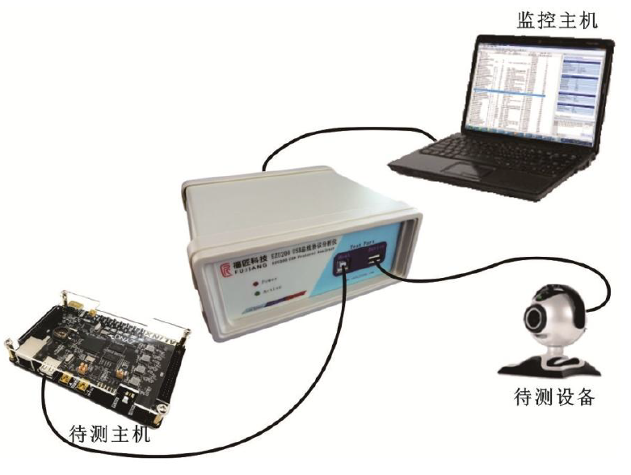
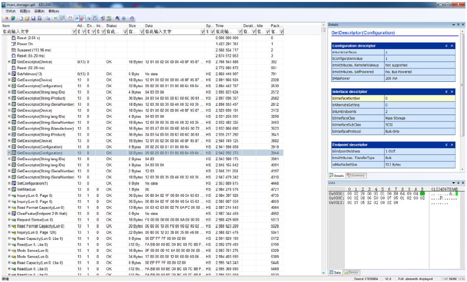
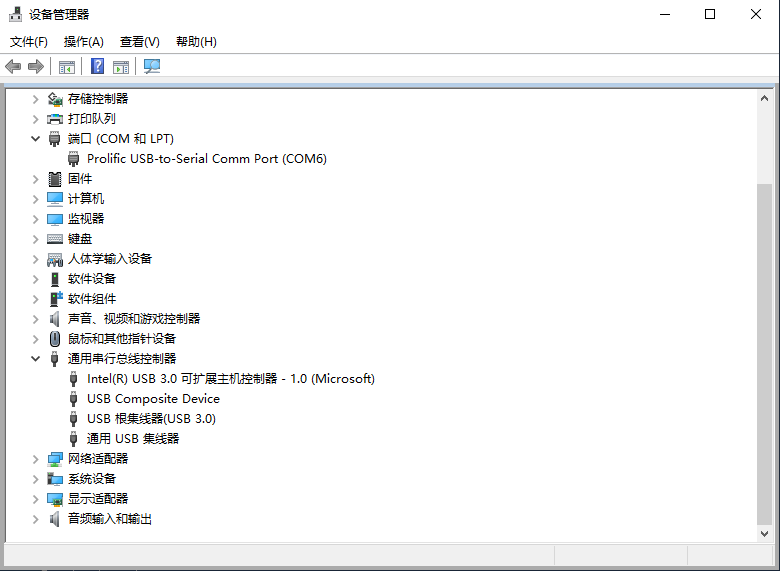

7.12.2. 调试指南¶
7.12.2.1. USB Host 调试¶
7.12.2.1.1. 查看 USB 设备¶
在单板的 USB Host 端口有设备插入或者拔出时，单板串口会有打印提示：
[aic@] #
[ 6792.678130] usb 1-1: new high-speed USB device number 2 using aic-ehci
[ 6792.884601] usb-storage 1-1:1.0: USB Mass Storage device detected
[ 6792.910596] scsi host0: usb-storage 1-1:1.0
[ 6793.970429] scsi 0:0:0:0: Direct-Access SanDisk Cruzer Blade 1.00 PQ: 0 ANSI: 6
[ 6793.995300] sd 0:0:0:0: [sda] 30842880 512-byte logical blocks: (15.8 GB/14.7 GiB)
[ 6794.018466] sd 0:0:0:0: [sda] Write Protect is off
[ 6794.025383] sd 0:0:0:0: [sda] Write cache: disabled, read cache: enabled, doesn't support DPO or FUA
[ 6794.055267] sda: sda1
[ 6794.074720] sd 0:0:0:0: [sda] Attached SCSI removable disk
[ 6806.436142] usb 1-1: USB disconnect, device number 2
也可以使用 lsusb 命令查看目前系统 USB 总线的情况：
[aic@] # lsusb
Bus 001 Device 001: ID 1d6b:0002
Bus 001 Device 003: ID 0781:5567
如果是 PC 上的 Linux 发行版， lsusb -v 命令可以查看 USB 设备的详细信息。但是单板上使用的 lsusb -v 被进行了简化。
7.12.2.1.2. Sysfs 节点¶
也可以使用 /sys/kernel/debug/usb/devices 文件节点查看 USB 设备的详细信息：
[aic@] # mount -t debugfs none /sys/kernel/debug
[aic@] # cat /sys/kernel/debug/usb/devices
T: Bus=01 Lev=00 Prnt=00 Port=00 Cnt=00 Dev#= 1 Spd=480 MxCh= 1
B: Alloc= 0/800 us ( 0%), #Int= 0, #Iso= 0
D: Ver= 2.00 Cls=09(hub ) Sub=00 Prot=00 MxPS=64 #Cfgs= 1
P: Vendor=1d6b ProdID=0002 Rev= 5.10
S: Manufacturer=Linux 5.10.44-00071-g935288d48127-dirty ehci_hcd
S: Product=EHCI Host Controller
S: SerialNumber=10220000.usb
C:* #Ifs= 1 Cfg#= 1 Atr=e0 MxPwr= 0mA
I:* If#= 0 Alt= 0 #EPs= 1 Cls=09(hub ) Sub=00 Prot=00 Driver=hub
E: Ad=81(I) Atr=03(Int.) MxPS= 4 Ivl=256ms
7.12.2.1.3. USB 总线分析仪¶
在 USB 设备不能正常枚举或者 USB 通讯过程中出现问题时，我们一般使用 USB 总线分析仪，接入到 USB 总线上进行旁路抓包分析。

抓包数据的分析界面如下图所示：

USB 总线分析仪对抓取的数据包进行了解析，用起来非常方便。市面上这类仪器大同小异，非常容易上手。
7.12.2.1.4. usbmon¶
在没有外部 USB 分析仪的情况下，也可以使用 Linux 内核自带的 USB 抓包模块 usbmon 来抓取数据包进行分析。
首先得打开 Linux 内核中的 usbmon 配置：
> Device Drivers > USB support
<*> USB Monitor
重新编译内核后就可以进行抓包了：
[aic@] # mount -t debugfs none /sys/kernel/debug
[aic@] # ls /sys/kernel/debug/usb/usbmon/
0s 0u 1s 1t 1u 2s 2t 2u
[aic@] # cat /sys/kernel/debug/usb/usbmon/0u
c1b0e380 68846726 C Ii:1:001:1 0:2048 1 = 02
c1b0e380 68846851 S Ii:1:001:1 -115:2048 4 <
c7a15900 68847426 S Ci:1:001:0 s a3 00 0000 0001 0004 4 <
c7a15900 68847507 C Ci:1:001:0 0 4 = 01050100
c7a15900 68847595 S Co:1:001:0 s 23 01 0010 0001 0000 0
c7a15900 68847652 C Co:1:001:0 0 0
c7a15900 68847732 S Ci:1:001:0 s a3 00 0000 0001 0004 4 <
c7a15900 68847790 C Ci:1:001:0 0 4 = 01050000
c7a15900 68890082 S Ci:1:001:0 s a3 00 0000 0001 0004 4 <
c7a15900 68890154 C Ci:1:001:0 0 4 = 01050000
c7a15900 68940072 S Ci:1:001:0 s a3 00 0000 0001 0004 4 <
c7a15900 68940142 C Ci:1:001:0 0 4 = 01050000
c7a15900 68990067 S Ci:1:001:0 s a3 00 0000 0001 0004 4 <
c7a15900 68990129 C Ci:1:001:0 0 4 = 01050000
7.12.2.2. USB Device 调试¶
7.12.2.2.1. 查看 USB 设备¶
当单板充当 USB Device 连接到 PC 主机 USB Host 端口时，可以在主机上查看 USB 设备有没有成功被枚举：
Linux 主机，可以通过
lsusb命令进行查看。Windows 主机，可以通过
设备管理器命令进行查看：
7.12.2.2.2. Sysfs 节点¶
在单板上也可以通过 /sys/kernel/debug/usb/xxxx.usb/ 文件夹下的文件节点，对 UDC 驱动进行配置：
[aic@] # ls /sys/class/udc
10200000.usb
[aic@] # ls /sys/kernel/debug/usb/10200000.usb/
dr_mode ep1out ep3in ep4out params testmode
ep0 ep2in ep3out fifo regdump
ep1in ep2out ep4in hw_params state
[aic@] #
例如可以 dump 寄存器：:
[aic@] # cat /sys/kernel/debug/usb/10200000.usb/regdump
GOTGCTL = 0x00000000
GOTGINT = 0x00000000
GAHBCFG = 0x00000000
GUSBCFG = 0x00000000
GRSTCTL = 0x00000000
GINTSTS = 0x00000000
GINTMSK = 0x00000000
GRXSTSR = 0x00000000
GRXFSIZ = 0x00000000
GNPTXFSIZ = 0x00000000
GNPTXSTS = 0x00000000
7.12.2.2.3. 抓包工具¶
和 USB Host 调试一样，抓包可以使用专门的 USB 总线分析仪或者在 Linux 主机上使用 usbmon 进行抓包。